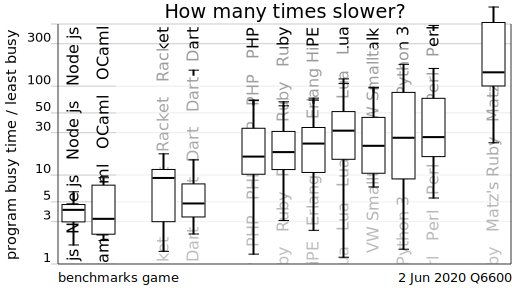
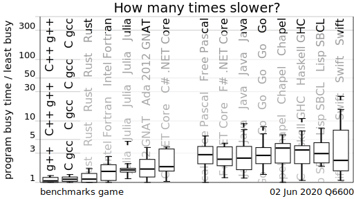

… a pretty solid study on the boredom of performance-oriented software engineers grouped by programming language.
To fix this, regex crate must be updated or replaced. I spent two weekends on this.
Always look at the source code.
Maybe programs contributed to the project as part of a concerted language advocacy and marketing strategy, benefit from more programmer hours spent on program optimization.
How many times slower, the fastest benchmark programs for selected programming language implementations are, compared to the fastest written in any of the programming languages.

Notice which boxes overlap completely. Notice which spread across too large a range of values for confidence.
The boxes are broken into separate groups, at the minima of the kernel density estimate for the geometric mean scores.
You can see that the order would be different if it was based on the median scores instead of the [pdf] geometric mean scores.

Please contribute better programs — Programs age. Language implementations add new features. New programs are needed to show the modern language.